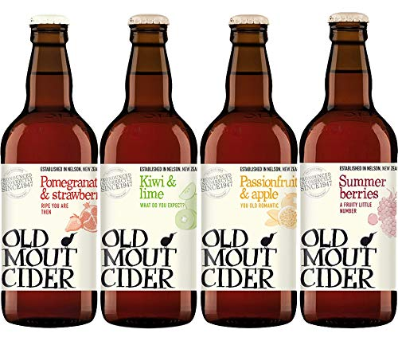

Cider is an ancient beverage. No-one knows when or where it was first made, because the native distribution of its principal component, the apple, is so widespread, from the Near East to northwestern Europe. In the cider market, ciders can be broken down into two main styles, standard and specialty. The first group consists of modern ciders and heritage ciders. Modern ciders are produced from culinary apples such as Gala. Heritage ciders are produced from heritage, cider specific, crab or wild apples, like Golden Russet. Historically, cider was made from the only resources available to make it,[18] so style wasn't a large factor when considering the production process. Apples were historically confined to the cooler climates of Western Europe and Britain where civilisation was slow to develop record keeping.[19] Cider was first made from crab apples, ancestors of the bittersweet and bittersharp apples used by today's English cider makers.
English cider contained a drier, higher alcohol content version, using open fermentation vats and bittersweet crab apples. The French developed a sweet, low alcohol "cidre" taking advantage of the sweeter apples and the keeving process.[21] These are the roots of the standard styles we know today. Cider styles evolved based on the methods used, the apples available and local tastes. Production techniques developed, as with most technology, by trial and error. In fact, the variables were nearly too widespread to track, including: spontaneous fermentation, the type of vessels used, environmental conditions, and the apple varieties. Refinements came much later when cider became a commercial product and the process was better understood. However, since there is growing popularity in ciders, the production of specialty styles has begun to increase.
Modern ciders are made from culinary apples and are lower in tannins and higher in acidity than other cider styles.[22] Common culinary apples used in modern ciders include McIntosh, Golden Delicious, Jonagold, Granny Smith, Gala, and Fuji.[22] A sweet or low alcohol cider may tend to have a strong aromatic and flavour character of apple, while drier and higher alcohol ciders will tend to produce a wider range of fruity aromas and flavours.[22] Modern ciders vary in color from pale to yellow and can range from brilliant to a hazy clarity.[22] Clarity can be altered through various cider making practices, depending on the cider maker's intentions.
Heritage ciders are made from both culinary and cider apples, including bittersweet, bittersharp, heirlooms, wild apples, and crabapples.[22] Common apples used in heritage cider production include Dabinett, Kingston Black, Roxbury Russet, and Wickson.[22] Heritage ciders are higher in tannins than modern ciders. They range in colour from yellow to amber ranging from brilliant to hazy. Clarity of heritage ciders also depends on the cider making practices used and will differ by cider maker as well.
Specialty style ciders are open to a lot more manipulation than modern or heritage style ciders. There is no restriction to apple varieties used and the list of specialty styles continues to expand. Listed on the USACM Cider Style Guide, specialty styles include: fruit, hopped, spiced, wood-aged, sour, and iced ciders. Fruit ciders have other fruit or juices added before or after fermentation, like cherries, blueberries, and cranberries.[22] Hopped cider is fermented with added hops, common hop varieties being Cascade, Citra, Galaxy, and Mosaic.[22] Spiced ciders have various spices added to the cider before, during, or after fermentation.[22] Spices like cinnamon and ginger are popular to use in production.[22] Wood-aged ciders are ciders that are either fermented or aged in various types of wood barrels, to aid in extraction of woody, earthy flavours.[22] Sour ciders are high acid ciders that are produced with non-standard, non-Saccharomyces yeast and bacteria, which enhance acetic and lactic acid production, in order to reach a sour profile.[22] Ice ciders can be made by using pre-pressed frozen juice or frozen whole apples. Whole apples either come frozen from the orchard, dependent on harvest date, or are stored in a freezer prior to pressing. When the pre-pressed juice or whole apples freeze, sugars are concentrated and mostly separated from the water. Whole apples are then pressed in order to extract the concentrated juice. For the pre-pressed juice the concentrated solution is drawn off while thawing occurs.[22] Although, according to the Alcohol and Tobacco Tax and Trade Bureau (TTB) cider producers can only label a product 'Ice Cider' if it is produced from apples naturally frozen outdoors.
Two styles not mentioned in the USACM Cider Style Guide are Rosé and Sparkling Cider. Rosé cider can be produced from apple varieties that have reddish-pink pulp, like Pink Pearl and Amour Rouge.[23] Rosé ciders can also be created through the addition of food-grade red dyes, previously used red grape skins, like Marquette with high anthocyanin concentration, red fruits, rose petals, or hibiscus.[23] Lastly, sparkling ciders can be produced through methods of direct carbonation, addition of carbon dioxide (CO2) or by Méthode Champenoise to re-create the traditional Champagne style.
German cider, usually called Apfelwein (apple wine), and regionally known as Ebbelwoi, Apfelmost (apple must), Viez (from Latin vice, the second or substitute wine), or Saurer Most (sour must), has an alcohol content of 5.5–7% and a tart, sour taste.
German cider is mainly produced and consumed in Hessen, particularly in the Frankfurt, Wetterau, and Odenwald areas, in Moselfranken, Merzig (Saarland) and the Trier area, as well as the lower Saar area and the region bordering on Luxembourg and in the area along the Neckar River in Swabia. In these regions, several large producers, as well as numerous small, private producers, often use traditional recipes. An official Viez route or cider route connects Saarburg with the border to Luxembourg.
An important component in cider-making is the addition of sulphur dioxide to inhibit the growth of many spoilage bacteria or yeasts in the juice. This encourages the inoculated yeast to dominate the juice environment, converting sugars to alcohol.[50] Once sulfur dioxide dissolves in the juice, it converts into a pH dependent mixture of bisulfite, sulfite ions, and molecular sulfur dioxide. The "unbound" sulfur dioxide provides the antimicrobial environment in the juice, while the bisulfite and sulfite ions contribute to flavour. The quantity of sulfur dioxide needed to inhibit microbial activity is directed related to pH of the juice; lower pH means less should be added, while higher pH juice requires more.[51] Many cider producers add sulfur dioxide immediately after pressing and juicing, but before fermentation. However, in some cases it can be added afterwards to act as an antioxidant or stabiliser. This prevents the finished cider from releasing hydrogen peroxide or aldehydes that produce "off" odors and flavours.[52]
Nitrogen is also very important nutrient to support yeast growth and fermentation in cider. Yeast require different forms of nitrogen to take up and use themselves so nitrogenous compounds are often added to apple juice.[53] The mixture of nitrogen-containing compounds that yeast can use are referred to as 'Yeast Assimilable Nitrogen', or YAN. Even though YAN can be added into juice before fermentation, there are other ways to affect the levels of nitrogen in the juice before pressing, like the maturity of the orchard or what type of fertiliser is used.[54] Using a fertiliser with a good amount of nitrogen will help the roots of apple trees; nitrogen fixing bacteria on the roots will be able to provide the tree with more nitrogen that will be able to make its way into the fruit.[55] A low crop load can also yield juices with more YAN than a high crop load because the nitrogen in more concentrated in the low number of apples instead of being distributed to many apples.[56] While a sufficient amount of YAN is good for the yeast and ensures fermentation of the sugars in the juice to alcohol, some cider makers may choose to limit nitrogen because it is the limiting factor.[57] When the yeast are starved for nitrogen, they stop fermenting and die off.[58] This can be desirable if cider makers prefer their cider to have some more sugar than alcohol in their cider.[59] However, limiting YAN should be done in moderation because too little nitrogen can lead to an increase in H2S production; H2S is responsible for a rotten egg-like smell.[60]
Primary cider fermentation can be initiated by inoculating the cider must with selected yeast strains or by permitting indigenous yeast strains present on the fruit and in the cider production equipment to spontaneously commence fermentation without inoculation. Inoculation with different strains of Saccharomyces cerevisiae and other yeast strains with strong fermentative metabolism traits, including Saccharomyces bayanus and Torulaspora delbrueckii strains, has been shown to produce few differences in cider phenolic compounds, save for concentrations of phloretin (see Phloretin) in samples that underwent malolactic fermentation. Spontaneous fermentation commenced by indigenous yeasts and finished by Saccharomyces cerevisiae can produce ciders with similar concentrations of important non-volatile acids (see nonvolatile acid), including lactic acid, succinic acid and acetic acid, while concentrations of volatile compounds such as methanol and 1-butanol, were present in different concentrations, dependent on apple cultivar. Extending the time during which the cider remains in contact with yeast lees increased concentrations of most of the minor volatile compounds present, especially fatty acids, ethyl esters and alcohols. Major volatile compound concentrations did not exhibit a similar pattern, with iso-butanol, amyl alcohols, and acetoine decreasing 1-propanol decreasing.
Sparkling ciders can be produced using different methods, including the Champenoise method used to produce champagne. Use of different strains of indigenous Saccharomyces to perform secondary fermentation produced ciders with consistent alcohol and acidic characteristics, variable glycerol, acetaldehyde, ethyl acetate, methanol, propanol, i-butanol and 2-phenylethanol characteristics and acceptable sensory analysis results.
